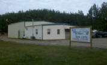

About Keith McDonald Plumbing
Keith McDonald, Master Plumber, began operations in Sandersville, Georgia in 2002 - bringing with him over 20 years of industrial maintenance experience.
In 2008, Keith purchased McGowan Plumbing in Dublin Georgia from Ronald McGowan. Ronald had spent over 30 years building a successful business and excellent reputation in the Dublin area. Ronald stayed with the company and is the Supervisor of the Dublin division. Ronald and his wife Jackie live in Dublin.
In early 2011, the business was once more expanded with the purchase of Durden Landscaping from James Durden. Durden had a long-standing reputation in Washington County in the area of sewer and septic work. Later in 2011, Keith purchased the portable toilet division from Durden.
Lindsay Goodson, the daughter of late Keith McDonald, joined the staff in 2009 as Office Manager. Lindsay holds an Associates Degree in Sociology from Gainesville State College as well as an Associates Degree in Computer Science from Sandersville Regional Technical College. Lindsay now works remotely from her home in Snellville where she lives with her husband Nic and son Jack.
On March 1, 2013 Keith McDonald Plumbing acquired Don Padgett Plumbing in Milledgeville, Georgia. Don Padgett has many years of experience in all areas of plumbing and stands on an excellent reputation in the Milledgeville and Baldwin County area. He brings a great deal of expertise to the team and has remained on staff as the Milledgeville area Superintendent. Don and his wife Pat are long-time residents of Milledgeville.
Rebecca Frederick joined the staff in February of 2014. Rebecca works in and Customer Service and serves all three locations. Rebecca and her husband J.T. live in Warthen.
Angelique Burgamy came on board in March of 2015. Angelique works in Dispatch and Customer Service and serves all three locations.

In August of 2021 my dad suddenly passed away due to complications of Covid-19. It was truly the most devastating thing to happen to our family and to our business. During that time, there was no question of what I wanted to do.
I was determined to continue forward with the company that he and my mother worked so hard to build. Through a lot of long days and nights and many difficult moments, I obtained my Master’s Plumbing License and took ownership from my mom in February of 2022. I made the decision to downsize a bit to focus our efforts in the areas that I am most passionate about. I wanted to be able to truly take care of our customers in the best way possible and without my dad it was clear that the company was too spread out for me to do that effectively. Customer service has always played a very close second to the quality work we provide.
Rounding out the Staff:
- Brad Allen - Service
- Frank Black - Portable Toilets
- Benji Brown - New Construction
- Matt Brown - New Construction
- Michael Brown - Portable Toilets/Service
- Corry Calloway - New Construction
- Tim Calloway - Service
- Levi Green - Service
- Rick Jackson - New Construction/Sewer & Septic
- Justin Jones - Service
- Lee Morgan - Service
- Shamond Moss - Service
- Mitch Rhodes - New Construction
- Timmy Ricks - Service
- Jared Sheley - Service/Sewer & Septic
- Tyler Silvers - New Construction
- B.J. Wasden - Service